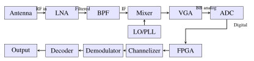

Chapter 15: Digital Signal Processing for Satellites¶
Chapter Objectives This chapter covers the principles and implementation of digital signal processing (DSP) systems for satellite communications. Topics include software-defined radio architectures, digital filtering, modulation and coding, spread spectrum techniques, OFDM, interference mitigation, on-board processing, beamforming, and compressed sensing for Earth observation.
15.1 Introduction to Space DSP¶
Digital signal processing has become the cornerstone of modern satellite communication systems. The transition from analog to digital processing has fundamentally transformed how satellites generate, transmit, receive, and exploit signals. Space-grade DSP systems must satisfy a demanding set of requirements that differ substantially from terrestrial implementations: they must operate reliably under intense radiation exposure, within tight power and mass budgets, and across temperature extremes ranging from \(-180^\circ\)C to \(+150^\circ\)C in the thermal cycling environment of low Earth orbit.
The evolution of space DSP follows closely the advances in VLSI technology and EDA tools. Early satellites relied on fixed-function analog circuits; modern spacecraft incorporate reprogrammable FPGAs and radiation-hardened digital signal processors capable of executing trillions of operations per second. This flexibility enables satellites to be reconfigured on-orbit to serve new missions, adapt to changing interference environments, or correct design errors discovered after launch.
Key performance metrics for space DSP hardware include:
-
Radiation tolerance: Total ionizing dose (TID) up to 100 krad(Si) for GEO missions, single-event latch-up (SEL) immunity, and single-event upset (SEU) mitigation through triple-module redundancy (TMR) or EDAC.
-
Power efficiency: Operations per watt (GOPS/W) is critical; space-grade FPGAs achieve 10–100\(\times\) lower efficiency than commercial parts but maintain functionality under radiation.
-
Processing throughput: Wideband channelizers may require processing bandwidths of 500 MHz to 4 GHz, demanding real-time throughput of \(10^{10}\)–\(10^{12}\) operations per second.
-
Latency: Interactive voice and video applications over satellite require end-to-end latencies below 280 ms (ITU-T G.114 recommendation), placing tight bounds on codec and processing delays.
Radiation Effects on DSP Hardware Cosmic rays and trapped belt protons can flip bits in SRAM-based FPGAs, causing single-event upsets (SEUs). Mitigation strategies include configuration scrubbing (reading and rewriting the FPGA bitstream every 10–100 ms), TMR for critical logic, and EDAC-protected memory. Flash-based FPGAs (Microsemi SmartFusion2) are inherently SEU-immune in the configuration memory but require careful attention to combinational logic. Radiation-hardened ASICs offer the highest TID tolerance (up to 1 Mrad) but lack in-orbit reprogrammability.
15.2 Software-Defined Radio Architecture¶
Software-defined radio (SDR) replaces traditional fixed-function analog hardware with a combination of wideband RF front-end hardware and flexible digital processing. In an ideal SDR, the analog-to-digital converter (ADC) is placed as close to the antenna as possible, and all signal processing—filtering, demodulation, decoding—is performed in software running on a reconfigurable digital platform.
15.2.1 SDR Block Diagram¶
A typical space SDR receiver chain consists of:
-
Antenna: Aperture-coupled patch, horn, or reflector providing \(G/T\) performance.
-
Low-Noise Amplifier (LNA): Sets system noise figure; GaAs pHEMT achieves \(N_F < 0.5\) dB at 20 GHz.
-
Bandpass Filter (BPF): Preselect filter suppresses out-of-band interference and LNA noise before mixing.
-
Downconverter: Heterodyne or direct-conversion architecture; dual-conversion preferred for image rejection.
-
Variable Gain Amplifier (VGA): Automatic gain control (AGC) maintains ADC input level across dynamic range.
-
ADC: Nyquist or bandpass sampling; 12–16 bits at 100 MS/s to 10 GS/s.
-
FPGA/DSP: Channelization, demodulation, decoding, and output formatting.

15.2.2 ADC and DAC Specifications¶
The ADC is the critical interface between the analog RF world and the digital processing domain. Key performance parameters include:
Effective Number of Bits (ENOB): The ENOB characterizes the true dynamic range of the ADC accounting for noise and distortion:
where SINAD is the signal-to-noise-and-distortion ratio in dB. A 16-bit ADC typically achieves ENOB of 12–14 bits due to thermal noise and nonlinearity.
Spurious-Free Dynamic Range (SFDR): The ratio between the fundamental signal and the largest spurious component. Space ADCs must achieve SFDR \(>\) 70 dBc to avoid interference from harmonics and intermodulation products.
Nyquist Criterion: The sampling frequency must satisfy:
For bandpass sampling (undersampling), signals centered at \(f_c\) with bandwidth \(B\) can be sampled at \(f_s \geq 2B\) if \(f_c\) falls in the appropriate Nyquist zone, enabling lower-cost ADCs to process high-frequency IF signals without a full downconversion stage.
Representative space-qualified ADC devices include the Analog Devices AD9208 (14-bit, 3 GSPS) and the e2v EV10AQ190 (10-bit, 10 GSPS quad-channel), both available in radiation-tolerant variants certified to 100 krad(Si).
15.2.3 Programmable Hardware Platforms¶
Modern space SDR systems employ a range of programmable processing platforms:
-
Xilinx (AMD) Virtex UltraScale+: The XQRVU37P space-grade variant offers 2.35M logic cells, 12 Gbps GTH transceivers, and HBM2 memory. Operating at 600 MHz, it can process 4 GHz instantaneous bandwidth with polyphase filter banks. TID rating: 100 krad(Si); SEU cross-section: \(< 10^{-8}\) cm\(^2\)/device.
-
NVIDIA Jetson AGX Xavier: Commercial-grade Jetson modules are used in low-Earth orbit missions (ISS experiments, LEO Earth observation) for machine learning inference at 32 TOPS with 30 W power envelope. Software TMR and shielding mitigate SEU.
-
Microchip RTG4: Flash-based FPGA, 150 krad TID, 4M gates, SEU-immune configuration memory, used in deep-space and GEO missions requiring extreme reliability. Available in CCGA624 hermetic ceramic package.
-
NXP QorIQ T2080: Radiation-tolerant PowerPC processor for housekeeping and protocol processing alongside FPGA-based waveform engines.
15.3 Digital Filtering¶
Digital filters are the fundamental building blocks of every DSP system. In satellite communications, filters perform channel selection, noise reduction, pulse shaping, and signal conditioning for subsequent processing stages.
15.3.1 FIR Filters¶
A finite impulse response (FIR) filter of order \(N\) is characterized by the transfer function:
where \(b_k\) are the filter coefficients and \(z^{-k}\) represents a delay of \(k\) samples. The frequency response is obtained by evaluating on the unit circle (\(z = e^{j\omega}\)):
FIR filters offer two critical advantages for satellite systems: linear phase (all frequency components experience identical group delay, eliminating phase distortion) and inherent stability (no feedback, so all poles are at the origin).
The Parks-McClellan/Remez exchange algorithm provides the optimal equiripple FIR filter design. Given specifications for passband ripple \(\delta_p\), stopband attenuation \(\delta_s\), passband edge \(\omega_p\), and stopband edge \(\omega_s\), the algorithm minimizes the maximum weighted Chebyshev approximation error:
where \(\mathcal{F}\) is the union of passband and stopband frequency bands, \(H_d(\omega)\) is the desired response, and \(W(\omega)\) is a frequency-dependent weighting function.
FIR Filter Length Estimation A useful rule of thumb for estimating FIR filter tap count \(N\) is the Harris approximation: \(N \approx -20\log_{10}(\delta_s \delta_p) / (14.6\, \Delta f)\), where \(\Delta f\) is the normalized transition bandwidth. For 60 dB stopband attenuation with 1% transition bandwidth, this gives \(N \approx 400\) taps. Root-raised-cosine (RRC) pulse shaping filters for QPSK typically use 32–64 taps at 4 samples per symbol.
15.3.2 IIR Filters¶
Infinite impulse response (IIR) filters use feedback to achieve steep roll-off with fewer coefficients than equivalent FIR designs. The general IIR transfer function is:
Butterworth filters provide maximally flat magnitude response in the passband with no ripple, at the cost of a moderate roll-off rate. The magnitude squared response of an \(N\)-th order Butterworth filter is:
Chebyshev Type I filters equiripple in the passband and monotone in the stopband, achieving steeper roll-off than Butterworth for the same filter order. The magnitude response:
where \(T_N(\cdot)\) is the \(N\)-th Chebyshev polynomial and \(\varepsilon\) controls passband ripple.
IIR filters are preferred where computational resources are limited (e.g., analog channel pre-select filters digitally implemented), but require careful attention to coefficient quantization sensitivity and potential limit cycle oscillations.
15.3.3 Polyphase Filter Banks for Channelization¶
A polyphase filter bank (PFB) efficiently divides a wideband signal into \(M\) narrowband channels simultaneously. It is the workhorse of satellite on-board channelizers and digital multi-beam receivers. The computational efficiency arises from commuting the downsampling operation before the subfilter computations.
For an \(M\)-channel filter bank, the \(k\)-th polyphase component of the prototype lowpass filter \(H(z)\) with transfer function \(\sum_n h[n] z^{-n}\) is defined as:
The analysis filter bank applies an \(M\)-point IFFT to the polyphase outputs, producing \(M\) simultaneously filtered and \(M\)-fold downsampled channels. Computational complexity is \(O(M \log_2 M)\) multiply-accumulate operations per input sample, compared to \(O(M \cdot N_{\rm filt})\) for \(M\) independent filters where \(N_{\rm filt}\) is the prototype filter length.
Overlapped PFBs (with oversampling factor \(K/M > 1\)) provide superior stopband rejection and reduced inter-channel interference, at the cost of additional computation. The Xilinx Virtex UltraScale+ can implement a 64-channel oversampled PFB operating at 2 GHz input sample rate using approximately 30% of available DSP48E2 slices.
15.4 Modulation and Demodulation¶
Satellite modulation schemes must balance spectral efficiency against power efficiency, since satellite amplifier power and available downlink spectrum are both constrained resources.
15.4.1 Phase-Shift Keying Modulations¶
BPSK (Binary Phase-Shift Keying): Modulates one bit per symbol onto two phases \(\{0^\circ, 180^\circ\}\). The bit error rate over an AWGN channel is:
where \(Q(x) = \frac{1}{2}\operatorname{erfc}(x/\sqrt{2})\) is the Q-function and \(E_b/N_0\) is the energy per bit to noise density ratio.
QPSK (Quadrature Phase-Shift Keying): Two bits per symbol, four phases \(\{45^\circ, 135^\circ, 225^\circ, 315^\circ\}\). The BER in AWGN is identical to BPSK when plotted against \(E_b/N_0\), but achieves double the spectral efficiency (2 b/s/Hz ideal).
8PSK: Three bits per symbol on eight equally spaced phases. The Gray-coded BER:
16APSK and 32APSK: Amplitude-and-phase-shift keying constellations optimized for nonlinear satellite channels operating near HPA saturation. The 16APSK constellation consists of 4 points on an inner ring of radius \(r_1\) and 12 points on an outer ring of radius \(r_2\), with a ring ratio \(r_2/r_1\) between about 2.6 and 3.15, chosen per code rate in the DVB-S2 standard. The 32APSK uses three rings. DVB-S2 reaches about 4.5 b/s/Hz (32APSK, rate 9/10), and the 64- to 256APSK modes of DVB-S2X reach higher values.
15.4.2 Matched Filter Receiver¶
The optimal receiver for maximizing SNR in AWGN is the matched filter. For a transmitted pulse \(s(t)\), the matched filter impulse response is \(h(t) = s(T - t)\) (time-reversed and delayed replica). At the sampling instant, the output SNR is:
where \(E_s\) is the symbol energy and \(N_0/2\) is the two-sided noise power spectral density. The matched filter is equivalently implemented as a correlator receiver that integrates the product of the received signal with a local replica of the transmitted pulse.
15.4.3 Timing and Carrier Recovery¶
Mueller-Müller Timing Recovery: A decision-directed timing error detector (TED) widely used in satellite modems. The timing error is estimated as:
where \(y[n]\) is the current sample at the nominal sampling instant, \(y[n-1]\) is the previous sample, and \(\hat{a}[n]\) are data decisions from the slicer. The TED output drives a numerically controlled oscillator (NCO) through a loop filter to adjust the sampling phase.
Costas Loop (Carrier Phase Recovery): A second-order PLL variant that tracks the carrier phase of a suppressed-carrier modulation such as BPSK or QPSK. The phase error detector output for QPSK is:
The PLL loop bandwidth \(B_L\) is chosen as a compromise between phase noise tracking ability (favoring wider \(B_L\)) and noise performance (favoring narrower \(B_L\)), typically 0.1–1% of the symbol rate \(R_s\).
15.5 Channel Coding¶
Channel coding adds structured redundancy to the transmitted data, enabling the receiver to detect and correct bit errors introduced by the channel. Modern satellite systems employ powerful codes operating within 1–2 dB of the Shannon capacity limit.
15.5.1 Convolutional Codes¶
A rate \(R = 1/2\), constraint length \(K = 7\) convolutional encoder is the historical standard for satellite communications (used in GPS, CCSDS heritage missions). The encoder contains \(K - 1 = 6\) memory elements with generator polynomials (octal) \(g_1 = 171_8\) and \(g_2 = 133_8\).
The free distance \(d_{\text{free}} = 10\) determines the asymptotic bit error probability:
where \(w_d\) is the input weight of error events at Hamming distance \(d\) and \(P_d\) is the pairwise error probability. Viterbi decoding (maximum likelihood sequence estimation) achieves a coding gain of approximately 5–6 dB at \(P_b = 10^{-5}\) versus uncoded BPSK over an AWGN channel.
15.5.2 Turbo Codes¶
Turbo codes (Berrou et al., 1993) use parallel concatenated convolutional codes (PCCC) with iterative decoding. The encoder consists of two recursive systematic convolutional (RSC) encoders separated by a pseudo-random interleaver of length \(N\). The iterative decoder exchanges extrinsic soft information (log-likelihood ratios, LLRs) between two BCJR (MAP) decoders:
where \(L_a\) is the a priori LLR and \(L_e\) is the extrinsic LLR from the other decoder. The 3GPP Release 8 LTE turbo code (rate 1/3, block lengths 40–6144 bits) achieves within 0.5 dB of Shannon for block lengths exceeding 1000 bits at \(P_b = 10^{-4}\).
15.5.3 LDPC Codes¶
Low-density parity-check (LDPC) codes, invented by Gallager (1962) and rediscovered by MacKay (1996), are defined by a sparse parity-check matrix \(\mathbf{H}\) with roughly \(d_c\) ones per column and \(d_v\) ones per row (the Tanner graph). The belief propagation (sum-product) algorithm iterates check-to-variable and variable-to-check messages:
The DVB-S2 standard specifies LDPC codes with rates from 1/4 to 9/10 (11 rates for the 64800-bit normal frame, 10 for the 16200-bit short frame). These codes achieve BER “waterfall” regions 0.5–2.0 dB from the Shannon limit, enabling the aggressive spectral efficiencies required for high-throughput satellite (HTS) systems operating at hundreds of Gbps aggregate capacity (as of 2025, Tbps for the largest).
15.5.4 Polar Codes¶
Polar codes (Arıkan, 2009) are the first family of codes proven to achieve the symmetric capacity of binary-input discrete memoryless channels with an explicit construction and low-complexity encoding and decoding. The key idea is channel polarization: applying an \(N = 2^n\)-point butterfly transform creates \(N\) synthetic channels, some approaching noiseless and others approaching pure noise. Data bits are placed on the reliable channels; “frozen” bits (set to 0 or known values) occupy the unreliable channels.
The successive cancellation (SC) decoder operates with complexity \(O(N \log N)\). The successive cancellation list (SCL) decoder with list size \(L = 8\), optionally augmented with a cyclic redundancy check (CRC-aided SCL), achieves performance exceeding turbo codes at short block lengths (200–1000 bits). Polar codes are adopted in 5G NR for control channels (PBCH, PDCCH) and are under evaluation for future satellite uplink standards.
15.5.5 Reed-Solomon Codes¶
RS(255, 239) is a widely used outer code in concatenated coding schemes (inner convolutional or LDPC + outer RS). The code operates on 8-bit symbols over GF(\(2^8\)), correcting up to \(t = 8\) symbol errors per 255-symbol block. The minimum Hamming distance is \(d_{\min} = 2t + 1 = 17\). RS codes are particularly effective against burst errors and are specified in the CCSDS channel coding standard (CCSDS 131.0-B), which uses RS(255,223) with \(t = 16\). The concatenated RS(255,223) \(+\) rate-1/2 \(K=7\) convolutional code became the standard for deep-space missions (from the Voyager planetary encounters onward), with a combined coding gain of roughly 7 dB.
| Code | Rate | Block/Frame | \(E_b/N_0\) (dB) | Gain (dB) |
|---|---|---|---|---|
| Uncoded BPSK/QPSK | 1 | — | 9.6 | 0.0 |
| Conv. \(K=7\), soft Viterbi | 1/2 | streaming | 4.4 | 5.2 |
| RS(255,223) + conv. \(K=7\) | \(\approx\)0.44 | streaming | 2.5 | 7.1 |
| Turbo (CCSDS) | 1/2 | 8920 b | \(\approx\)1 | \(\approx\)8.6 |
| LDPC DVB-S2, QPSK | 1/2 | 64800 b | 1.0 | 8.6 |
| LDPC DVB-S2, QPSK | 3/4 | 64800 b | 2.3 | 7.3 |
| LDPC DVB-S2, QPSK | 9/10 | 64800 b | 3.9 | 5.7 |
| Shannon limit (QPSK, 1 b/s/Hz) | — | \(\infty\) | 0.0 | 9.6 |
15.6 Spread Spectrum¶
Spread spectrum techniques deliberately expand the transmitted signal bandwidth far beyond the minimum required for the information rate. This provides resistance to narrowband jamming, low probability of intercept (LPI), multiple access capability (CDMA), and accurate two-way ranging.
15.6.1 Direct Sequence Spread Spectrum (DSSS)¶
In DSSS, the data signal \(d(t)\) is multiplied by a pseudorandom noise (PN) code \(c(t)\) running at the chip rate \(R_c \gg R_b\) (data bit rate). The transmitted signal is:
The processing gain (PG), which equals the jamming margin in a barrage jamming scenario, is:
A GPS L1 C/A signal with \(R_c = 1.023\) Mcps and \(R_b = 50\) bps achieves \(\mathrm{PG} = 43.1\) dB. The anti-jamming margin (J/S margin) for reliable reception is:
For GPS C/A with \(\mathrm{PG} = 43\) dB and \((E_b/N_0)_{\text{req}} = 10\) dB, the maximum tolerable jamming-to-signal ratio is 33 dB (a factor of 2000:1 in power).
15.6.2 GPS Signal Structure¶
The GPS L1 C/A signal (1575.42 MHz) employs Gold codes of length 1023 chips at 1.023 Mcps, with code repeat period of 1 ms. Gold codes are constructed from two maximal-length sequences (m-sequences) of length \(2^{10} - 1\) via modulo-2 addition with varying delays, yielding 1025 codes with bounded cross-correlation: \(|R_{xy}(\tau)| \leq 65/1023 \approx -23.9\) dB for any offset.
The GPS L5 signal (1176.45 MHz) uses a 10.23 Mcps chip rate with longer 10230-chip codes (1 ms period), providing about 10 dB more spreading gain and improved multipath rejection compared to L1 C/A. The military M-code uses BOC(10,5) modulation with encrypted codes, giving improved jam resistance and spectral separation from the civil signals.
15.6.3 Frequency-Hopping Spread Spectrum (FHSS)¶
In FHSS, the carrier frequency hops across \(N\) channels according to a pseudorandom sequence. During each dwell time \(T_d\), a narrowband signal occupies one frequency channel. The hopping rate \(f_h = 1/T_d\) determines resistance to follower jamming: a fast hopper with \(f_h > 10^3\) hops/s prevents the jammer from measuring the frequency and retransmitting before the next hop occurs.
The processing gain for FHSS against partial-band jamming across fraction \(\rho\) of the band is:
Military FHSS systems (HAVE QUICK UHF radio, SINCGARS VHF) hop over 25 kHz channels covering 30 MHz bandwidth, giving PG \(= 30\) dB. CDMA systems exploit orthogonal Gold codes among users in the same bandwidth, with each user recovering its signal via the processing gain while treating other users’ signals as noise (interference-limited).
15.7 OFDM Systems¶
Orthogonal frequency division multiplexing (OFDM) divides the wideband channel into \(N\) narrowband orthogonal subcarriers, each experiencing nearly flat fading over its symbol duration. OFDM is the modulation of choice for broadband wireless (LTE, 5G, Wi-Fi) and is increasingly considered for satellite systems despite unique challenges posed by LEO Doppler shifts and HPA nonlinearity.
15.7.1 OFDM Fundamentals¶
The OFDM baseband signal over one symbol duration \(T_s\) is:
where \(\Delta f = 1/T_s\) ensures subcarrier orthogonality: \(\int_0^{T_s} e^{j2\pi k \Delta f t} e^{-j2\pi l \Delta f t}\,dt = 0\) for \(k \neq l\). The modulator implements this as an \(N\)-point IDFT, and the demodulator as an \(N\)-point DFT.
The cyclic prefix (CP) of length \(N_{CP}\) samples (duration \(T_{CP} = N_{CP}/f_s\)) is prepended to each symbol. The CP must satisfy \(T_{CP} \geq \tau_{\max}\) (maximum channel delay spread) to eliminate inter-symbol interference. It converts linear convolution with the channel into circular convolution, enabling simple per-subcarrier one-tap equalization. The spectral efficiency reduction from CP overhead is:
15.7.2 PAPR and Crest Factor Reduction¶
A critical disadvantage of OFDM is its high Peak-to-Average Power Ratio (PAPR). With \(N\) subcarriers, when all add coherently, the PAPR can reach \(10\log_{10}(N)\) dB. For satellite HPA operation, high PAPR forces the amplifier to operate far from saturation (large output back-off, OBO), directly reducing DC-to-RF power efficiency, which is a critical resource on a satellite.
Crest factor reduction (CFR) techniques include:
-
Clipping and filtering: Hard clip at threshold \(A\), then filter to restore spectral mask. Introduces a clipping noise floor that limits achievable EVM.
-
Active constellation extension (ACE): Move outer constellation points outward to cancel time-domain peaks while maintaining the spectral mask.
-
Tone reservation: Reserve a subset of subcarriers exclusively for a PAPR reduction peak-canceling waveform (no data on reserved tones).
-
Selected mapping (SLM): Multiply the frequency-domain block by \(U\) independent phase rotation vectors, select the variant with minimum PAPR for transmission, and signal the index to the receiver as side information.
15.7.3 DVB-T2 and Satellite OFDM Parameters¶
The DVB-T2 standard (terrestrial broadcast) employs OFDM with a 32K FFT mode (\(N = 32768\) subcarriers), subcarrier spacing \(\Delta f = 279\) Hz in an 8 MHz channel, and a maximum CP duration of \(1/4 \times T_s \approx 896\) µ s, providing immunity to multipath delays of up to about 0.9 ms (a path difference of roughly 270 km), which enables large single-frequency network areas.
For satellite applications (DVB-SH, S2X extensions), OFDM faces the challenge of large Doppler shifts from LEO platforms. A LEO satellite at 550 km altitude moving at 7.6 km/s relative to a ground station produces a carrier Doppler shift of:
at Ka-band (20 GHz). This frequency offset, if not pre-compensated, can destroy subcarrier orthogonality for the narrow subcarrier spacings used in terrestrial OFDM. Solutions include Doppler pre-compensation at the satellite feeder or terminal, and DFT-spread OFDM (SC-FDMA) which is inherently more robust to frequency offsets.
15.8 Interference Mitigation¶
Satellite systems must cope with interference from co-channel satellites, adjacent satellites, terrestrial systems sharing spectrum (MSS/FSS spectrum sharing), and intentional jamming. Digital signal processing provides powerful tools for interference detection, characterization, and cancellation.
15.8.1 Adaptive Equalization¶
The LMS (Least Mean Squares) adaptive algorithm updates the equalizer tap weight vector \(\mathbf{w}[n]\) to minimize the mean squared error between filter output and a reference signal:
where \(e[n] = d[n] - \mathbf{w}^H[n]\mathbf{x}[n]\) is the error signal, \(d[n]\) is the desired reference (known training symbol or slicer decision), \(\mathbf{x}[n]\) is the input tap vector, and \(\mu\) is the step size. Convergence requires \(0 < \mu < 1/(N\sigma_x^2)\).
The RLS (Recursive Least Squares) algorithm achieves faster convergence (typically \(2N\) iterations vs. \(>10N\) for LMS) at \(O(N^2)\) computational cost:
where \(\lambda \in (0,1]\) is a forgetting factor that controls the tracking-variance tradeoff and \(\mathbf{P}[n]\) is the regularized inverse correlation matrix estimate.
15.8.2 Decision Feedback Equalizer¶
The decision feedback equalizer (DFE) consists of a forward filter (FFF) that processes the received signal and a feedback filter (FBF) that subtracts intersymbol interference from previously decoded symbols. The DFE avoids noise enhancement in the forward filter at the cost of error propagation: a decision error in the feedback path corrupts several subsequent symbol decisions. DFEs are effective for frequency-selective satellite channels produced by adjacent beam interference or multipath in non-geostationary orbits.
15.8.3 Successive and Parallel Interference Cancellation¶
In multi-user satellite systems (CDMA or NOMA uplink), interference cancellation improves achievable throughput:
SIC (Successive Interference Cancellation): Decode users in order of decreasing received SNR. After successfully decoding user \(k\), re-encode and subtract its contribution from the received signal before decoding user \(k+1\). SIC achieves any point on the AWGN MAC capacity region boundary and is optimal for two-user channels.
PIC (Parallel Interference Cancellation): All users are decoded simultaneously using tentative hard or soft decisions. Each successive iteration refines estimates by subtracting the multi-user interference reconstructed from other users’ tentative decisions. PIC converges in fewer satellite round-trip delays than SIC but requires multiple iterations, each introducing processing delay.
15.8.4 GNSS Interference Detection and Mitigation¶
GNSS receivers are particularly vulnerable to narrowband jamming (both intentional and unintentional from LTE/5G signals in adjacent or harmonically related bands). Detection and mitigation methods include:
-
AGC monitoring: A sudden decrease in AGC gain indicates a strong wideband interference signal saturating the ADC input.
-
Spectral excision: FFT-based detection of spectral peaks above the noise floor, followed by replacing the affected bins with zero or noise-floor values.
-
Adaptive notch filter: An IIR notch filter with time-varying center frequency tracks and suppresses narrowband continuous wave (CW) interferers. The notch frequency is estimated via the LMS algorithm applied to a prediction error filter.
-
STAP: Space-Time Adaptive Processing with a controlled reception pattern antenna (CRPA) array forms spatial nulls toward jammers while maintaining gain toward GNSS satellites, achieving \(> 30\) dB of jamming suppression.
15.9 On-Board Processing Satellites¶
On-board processing (OBP) transponders demodulate, decode, switch, recode, and remodulate signals in space, as opposed to transparent (bent-pipe) transponders that simply amplify and frequency-translate the uplink signal to the downlink without signal regeneration.
15.9.1 Regenerative Transponders vs. Transparent¶
The key advantages of regenerative (OBP) transponders are:
-
Interference isolation: Uplink interference is not forwarded to the downlink; only decoded data bits are retransmitted, eliminating interference sources that would otherwise enter the downlink.
-
Noise threshold reset: Uplink \(C/N\) and downlink \(C/N\) are treated independently; the overall link margin is not degraded by cascading both noise contributions.
-
On-board switching: Digital crosspoint switch matrices route traffic between beams and transponders without requiring ground-based switching hubs.
-
Bandwidth flexibility: Digital channelizers can be reconfigured to reallocate spectral bandwidth among beams in response to changing traffic demand.
-
On-board ACM: Adaptive coding and modulation decisions can be made based on uplink channel quality measurements, independent of the downlink ACM selection.
15.9.2 Digital Channelizer Architecture¶
A digital channelizer divides the wideband transponder receive band into \(M\) narrowband sub-channels using a polyphase filter bank followed by an \(M\)-point FFT. Representative parameters for HTS missions: \(M = 50\)–\(500\) channels of 36–250 MHz each, from a 500 MHz–4 GHz input band. Output sub-channels feed a digital crosspoint switch that connects any input sub-channel to any beam output. The switch matrix for \(B\) beams and \(M\) channels is an \(M \times B\) non-blocking router implemented in FPGA.
15.9.3 Notable OBP Missions¶
-
Spaceway-3 (2007): Ka-band GEO satellite with on-board packet switching and processing for broadband spot-beam services.
-
Thuraya satellites (from 2000): L-band mobile satellites using on-board digital signal processing and beamforming to serve handheld terminals.
-
Eutelsat Quantum (2021): A software-defined GEO satellite whose beams, coverage and frequency plan can be reconfigured in orbit.
-
Ground-based beamforming: Some L-band mobile satellites (for example SkyTerra-1, 2010) perform the beamforming on the ground rather than on board, trading on-board complexity for feeder-link capacity.
15.10 Beamforming and Spatial Processing¶
Phased array antennas combined with digital beamforming (DBF) enable a satellite to simultaneously form multiple narrow, high-gain beams pointed at different ground locations, with independent control of beam shape, pointing, sidelobe level, and null placement.
15.10.1 Digital Beamforming Fundamentals¶
For an \(N\)-element array with element positions \(\mathbf{r}_n\), the array response (steering) vector to a signal arriving from direction \(\hat{\mathbf{s}}\) at wavelength \(\lambda\) is:
The beamformer output is \(y = \mathbf{w}^H \mathbf{x}\), where \(\mathbf{x}\) is the received signal vector. The conventional (delay-and-sum) beamformer uses \(\mathbf{w} = \mathbf{a}(\hat{\mathbf{s}}_0)/N\), which maximizes the array gain toward the desired direction \(\hat{\mathbf{s}}_0\) but cannot place nulls on interferers.
15.10.2 MVDR Beamformer¶
The Minimum Variance Distortionless Response (MVDR) or Capon beamformer minimizes the total output power subject to a unity gain constraint in the desired direction:
where \(\mathbf{R} = E[\mathbf{x}\mathbf{x}^H] + \sigma_n^2 \mathbf{I}\) is the regularized spatial covariance matrix. The MVDR beamformer automatically places nulls at interference sources while maintaining unity gain in the desired direction, achieving 30–40 dB of jammer suppression with an 8-element array. In practice, \(\mathbf{R}\) is estimated from training data snapshots: \(\hat{\mathbf{R}} = \frac{1}{K}\sum_{k=1}^K \mathbf{x}[k]\mathbf{x}^H[k]\).
15.10.3 DOA Estimation: MUSIC and ESPRIT¶
MUSIC (Multiple Signal Classification): Exploits the eigendecomposition of \(\mathbf{R}\). The noise subspace \(\mathbf{E}_n\) is spanned by the \(N - d\) eigenvectors corresponding to the smallest (noise) eigenvalues, and is orthogonal to the signal subspace. The MUSIC spatial pseudospectrum is:
DOA estimates are the \(d\) sharpest peaks of \(P_{\text{MUSIC}}(\theta)\), with resolution capability exceeding the Rayleigh beamwidth when SNR is sufficient.
ESPRIT (Estimation of Signal Parameters via Rotational Invariance Techniques) avoids the peak search by exploiting the rotational invariance property of two identically translated sub-arrays, providing closed-form DOA estimates at lower computational cost.
15.10.4 MIMO Space-Time Block Codes¶
The Alamouti 2\(\times\)1 space-time block code achieves full transmit diversity order 2 with coding rate 1 symbol per channel use, using two transmit antennas. Over two consecutive symbol periods, the \(2 \times 2\) space-time transmission matrix is:
where column \(t\) represents the transmitted vector at time slot \(t\). The receiver decouples \(s_1\) and \(s_2\) using simple linear combining without requiring channel state information at the transmitter. The diversity gain substantially improves BER at the same SNR compared to single-antenna transmission, particularly important for non-line-of-sight LEO-to-ground links experiencing fast fading due to platform vibration and antenna pointing jitter.
15.11 Compressed Sensing for Earth Observation¶
Earth observation satellites generate enormous data volumes: a hyperspectral imager with 200 spectral bands at 30 m spatial resolution covering a 100 km swath at 7 km/s produces over 100 Gbps of raw pixel data. Compressed sensing (CS) enables sub-Nyquist sampling and sparse signal reconstruction, dramatically reducing on-board data storage and downlink bandwidth requirements.
15.11.1 Sparsity and the CS Framework¶
A signal \(\mathbf{x} \in \mathbb{R}^N\) is said to be \(K\)-sparse in a basis \(\boldsymbol{\Psi}\) if it can be represented as:
where \(\|\cdot\|_0\) counts non-zero entries (the \(\ell_0\) “norm”). Hyperspectral images are highly compressible in the wavelet or DCT domain, with 90% of signal energy concentrated in fewer than 10% of the transform coefficients.
The CS measurement process takes \(M \ll N\) incoherent linear measurements:
where \(\boldsymbol{\Phi} \in \mathbb{R}^{M \times N}\) is the measurement matrix (random Gaussian or Bernoulli entries ensure incoherence with high probability). Recovery of \(\boldsymbol{\alpha}\) from \(\mathbf{y}\) when \(M < N\) requires that the sensing matrix \(\mathbf{A} = \boldsymbol{\Phi}\boldsymbol{\Psi}\) satisfies the Restricted Isometry Property (RIP) of order \(2K\):
for all \(2K\)-sparse \(\boldsymbol{\alpha}\). The sufficient condition for stable recovery is \(\delta_{2K} < \sqrt{2} - 1 \approx 0.414\).
15.11.2 Reconstruction Algorithms¶
OMP (Orthogonal Matching Pursuit): Greedy algorithm that iteratively selects the column of \(\mathbf{A}\) most correlated with the current residual, then orthogonally projects the residual onto the selected support set. Complexity \(O(KMN)\) per reconstruction, requiring \(K\) iterations. Suitable for FPGA implementation with small \(K\).
LASSO (Least Absolute Shrinkage and Selection Operator): Convex \(\ell_1\) relaxation of the combinatorial \(\ell_0\) minimization problem:
Solved efficiently via ADMM, ISTA/FISTA (fast iterative shrinkage-thresholding), or interior-point methods. The regularization parameter \(\lambda\) balances fidelity and sparsity.
15.11.3 On-Board Implementation and Standards¶
For a hyperspectral imager achieving 10:1 compression ratio (\(M/N = 0.1\)), the on-board CS processor computes the \(M \times N\) matrix-vector product in real time before the downlink buffer. The total on-board multiply-accumulate rate is \(M \times N \times f_{\rm pixel}\), feasible on a space-qualified FPGA for moderate pixel rates.
The CCSDS 122.0-B-2 image data compression standard specifies a wavelet-based compression algorithm (DWT + bit-plane coding) supporting lossless and lossy operation and suitable for hardware implementation on FPGAs and ASICs. The CCSDS 123.0-B standard addresses multispectral and hyperspectral data, exploiting inter-band spectral correlations.
Key Performance Summary: Space DSP A well-designed satellite DSP system should achieve:
-
SDR flexibility: \(> 500\) MHz instantaneous bandwidth with 12-bit ENOB ADC
-
Channel coding: LDPC DVB-S2 within 0.5–2.0 dB of Shannon limit
-
Spread spectrum: Processing gain \(> 43\) dB for GPS L1 C/A (anti-jam margin \(> 33\) dB)
-
Beamforming: MVDR adaptive nulling achieving \(> 30\) dB interference suppression
-
On-board processing: 50–500 channel polyphase channelizer with flexible routing
-
Compressed sensing: an active research topic for hyperspectral compression, with performance that depends strongly on scene content
Summary¶
This chapter has surveyed the complete landscape of digital signal processing for satellite systems. Software-defined radio architectures leverage space-qualified FPGAs and radiation-tolerant ADCs to achieve the flexibility required for multi-mission satellites operating across diverse frequency bands and waveform standards. Advanced channel coding—LDPC, turbo, and polar codes—has enabled satellite links to approach the Shannon capacity limit, driving increases in spectral efficiency that are essential for economically viable high-throughput satellite systems. Spread spectrum techniques provide anti-jamming protection and precision ranging for navigation and military applications. OFDM enables high-spectral-efficiency broadband services, with Doppler pre-compensation addressing the unique challenges of LEO platforms. On-board processing regenerative transponders isolate link budgets, improve interference management, and enable intelligent traffic routing. Adaptive beamforming using MVDR and related algorithms provides spatial interference rejection of 30–40 dB. Finally, compressed sensing offers a mathematically principled framework for reducing data volumes from Earth observation payloads, enabling higher-bandwidth science with constrained downlink capacity.